Analysis 1
Psychometric fitting
Curve shape summarizes model behavior across emotion intensity.
Reproduce this analysis in our PsychometricFittingCurve repository.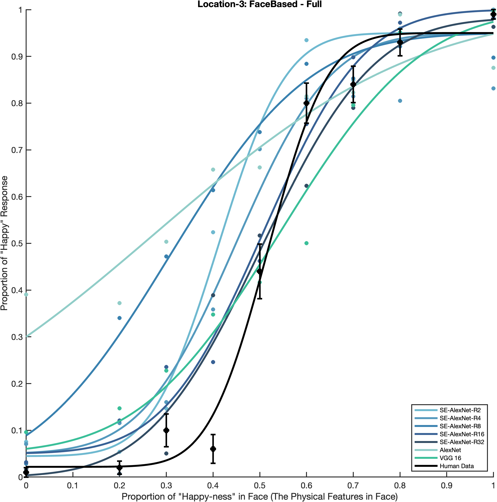
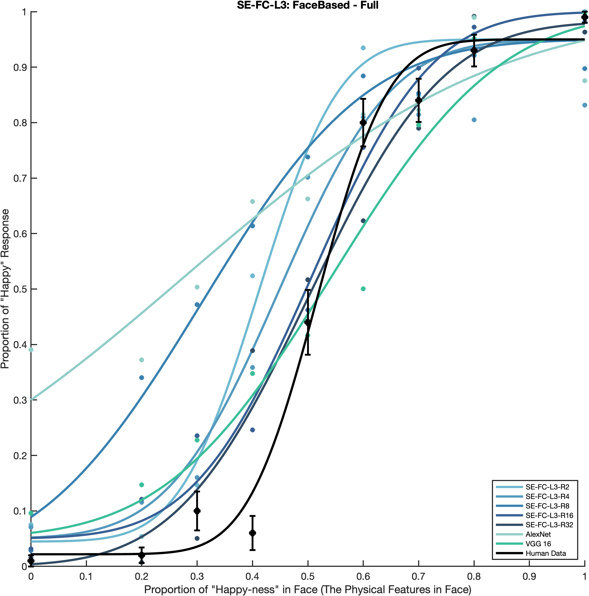
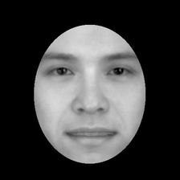
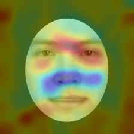
Does channel-wise reduction change how CNNs use facial regions?
Aligned stimuli make Grad-CAM differences directly comparable.
ROI saliency and fitting curves connect attention with behavior.
Same face, different models, directly comparable attention.
The aligned input makes attention the visual variable
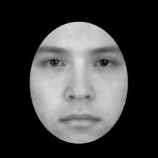
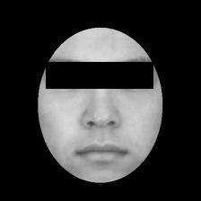
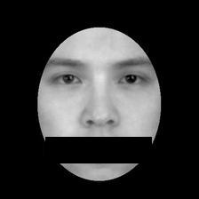
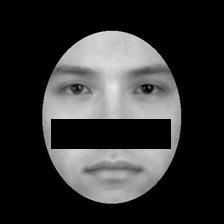
Channel descriptors are squeezed, excited, and used to reweight feature maps
Grad-CAM is summarized inside eyes, nose, and mouth bands on aligned 224 x 224 faces.
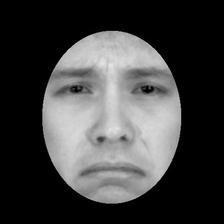
Eyes Nose MouthA region score is the share of total Grad-CAM activation inside that ROI.
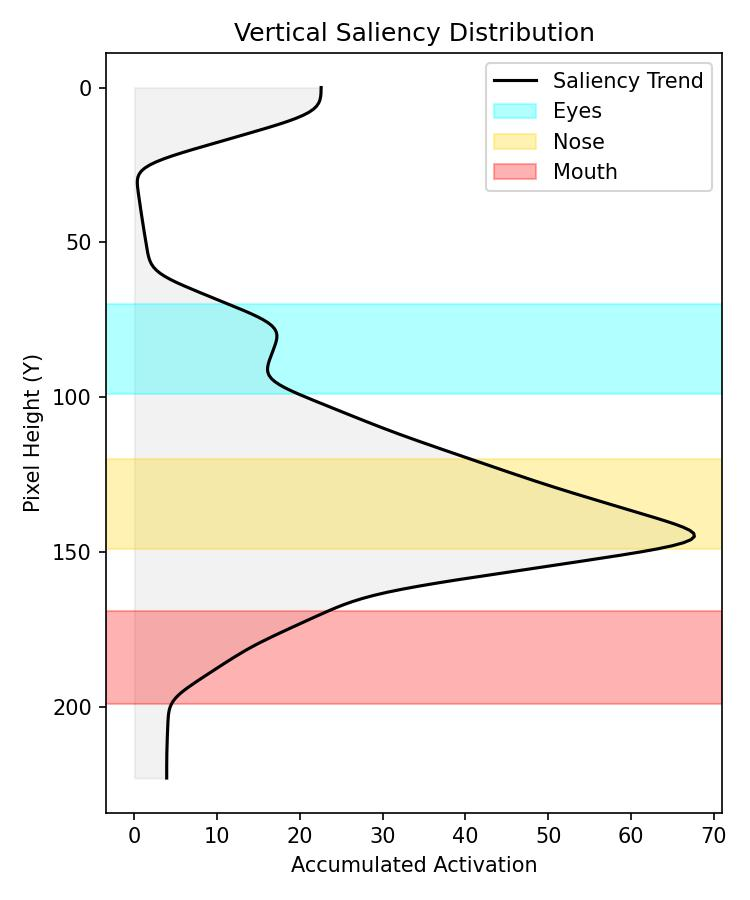
X-Axis: Accumulated Activation (Saliency Strength).
Y-Axis: Pixel Height (0 = Top of Face, 224 = Bottom of Face).
The black curve represents the distribution of attention from the top to the bottom of the face.
Gaussian Smoothing (Sigma=3) is applied to reduce noise.
If the black curve's peak aligns with the Red Band, the model is primarily focusing on the Mouth.
Core conclusion
Analysis 1
Curve shape summarizes model behavior across emotion intensity.
Reproduce this analysis in our PsychometricFittingCurve repository.

Analysis 2
Accuracy and loss check that the visual effect is not detached from optimization.
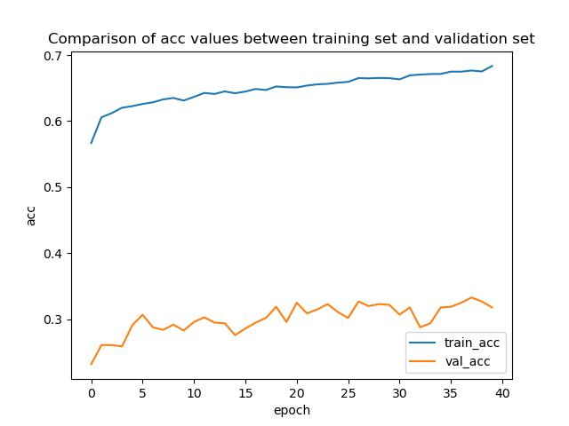
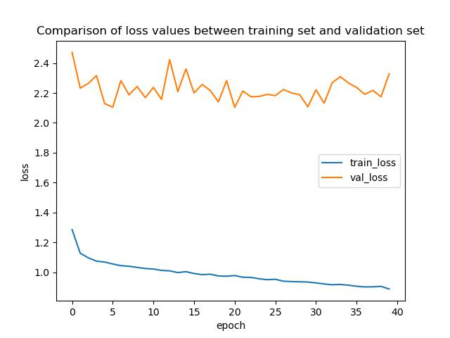
Analysis 3
ROI proportions are the main quantitative readout; trend plots show where the vertical peak lands.
Reproduce Grad-CAM and ROI saliency in our GradCAM-ROI-SaliencyMapDecoder repository.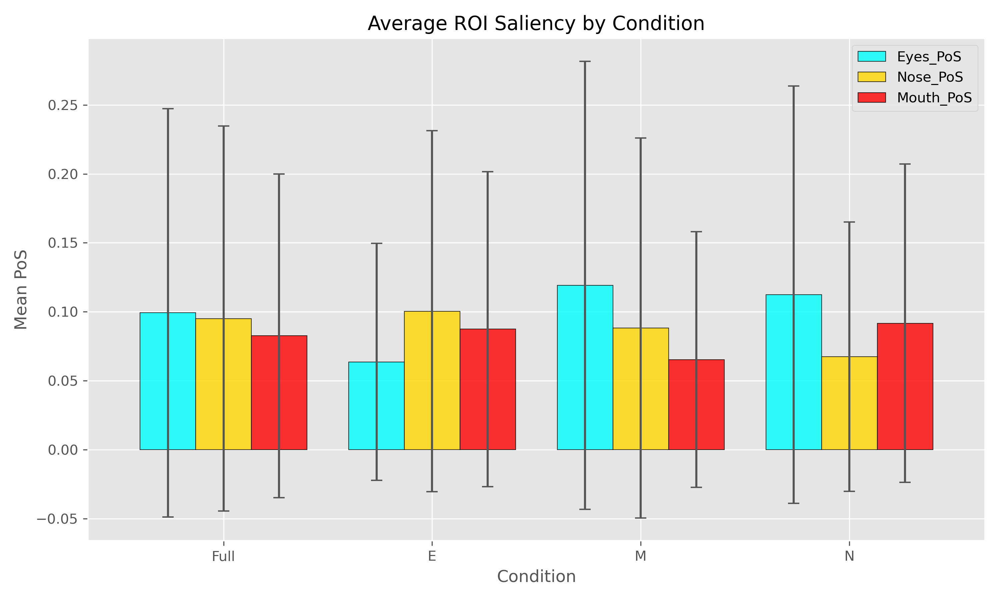
Please use the manuscript citation for this project.
@article{,
title={},
author={},
year={},
note={Manuscript under review}
}